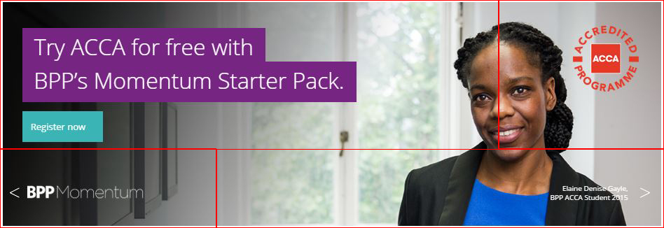
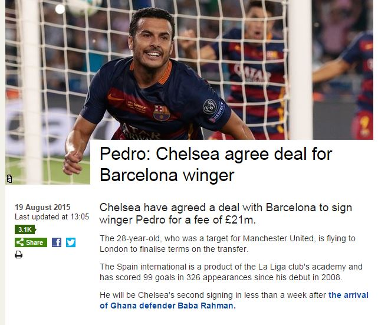

The following guides contain information about the processes, technologies, styles and limitations that the Digital team has when updating and creating content on BPP.com. The key aims we have for the site are to provide a consistent experience page to page whilst being able to provide clear brand identity to the different areas of BPP and BPP as a whole.
The content management system (CMS) we use on BPP.com is called Liferay. It allows us to add pages, change the templates of those pages and add content to the pages through portlets. Our control over Liferay is limited as it is controlled by Apollo Global in the U.S.A. This means certain processes can take overnight due to the time zones.
When we first edit or create content we do so through CAP. CAP is a copy of BPP.com that we use as a testing and editing area. Only people on the BPP network can access it and it doesn't get indexed by Google. Once content is ready we 'approve' it and it is pushed live to BPP.com
Eloqua is a campaign management system. It hosts our e-mails, forms and some stand alone web pages. As we have greater control over Eloqua it allows us to provide extra functionality to pages when necessary. Eloqua forms can be placed into BPP.com to allow us to capture data.
When we put a phone number on the site we use a system called Infinity to track the number. Infinity are an external company that we pay for their services. Their product allows us to track the page that a specific phone call has come from. The number on the page is dynamically changed for each user. Because of this the layout is defined by the code which currently doesn't allow us to add brackets into the numbers.
Sadly though it shares 4 letters with Mario Kart it's nowhere near as fun. If we mention it, we've probably spent the last 30 minutes trying not to go on a murderous rampage. Kona Kart stores the content for our programme pages. It is on a 15 minute update cycle so content won't go live for up to 30 minutes but there is no testing area so the content will be available to the public within 30 minutes of it being changed.
We have additional storage space available on an Amazon S3 server. We put images and PDF's etc on there. It allows us to put in one link to BPP.com and if the image or PDF changes then we can update it but the link stays the same. This is efficient if the PDF is linked to from multiple pages.
If forms need special functions such as questions only being available if previous answers match certain criteria then we create the form in Wufoo. These forms don't go into Eloqua and therefore also don't go into Salesforce as leads. This has to be done manually afterwards.
These are the language that the digital monkeys speak in. HTML is a set of tags that are responsible for the structure of pages. You may recognise it from e-mail templates. CSS is responsible for the styling of the pages. HTML changes can be made through portlets but CSS changes are controlled by the global templates and so can take time to develop.
Another coding language, these two make interesting interactions happen on the page. Anything that is dynamic or animated is written in Javascript. jQuery is just a simpler shorthand version of Javascript that is quicker to write.
The tool used to store the information about leads that are generated through various methods across BPP.
Below is a brief explanation of the process we go through when creating a page. Hopefully it will give a rough timeline and insight into the different aspects that go into a page that might not be visible on the page.
The first step is to create the page within Liferay. Through this we choose the URL, template, layout and add the portlets to the page. At this point the page is only available to view in CAP. For it to be put live it must be deployed to the live servers. If any of the properties listed previously change then the page needs to be re-deployed.
At this point we add the content to the page and tag it up with HTML. All of the CSS is provided by the global stylesheets so the page comes together pretty quickly. We also need to tag any buttons with click tracking so that we can see users movements across the site and tag up phone numbers with Infinity tracking.
If the page has a form then we need to actually make that form in Eloqua and make sure all of the form fields exist in both the code and the form. We also need to check that people can't enter the incorrect format or no information at all into the form. Finally we also need to make a confirmation page so that people who complete the form have somewhere to go.
This is the phase that takes the longest. We need to check that everything displays correctly across multiple browsers and any Javascript interactions work as expected. Then we need to test that the form information goes into Eloqua and to Salesforce correctly and is being captured. Although the page may look correct at this point, there may be processing steps behind the scenes that don't work as expected.
Once we are happy that the page has been completed and works as expected we deploy the page to the live BPP.com server. There are two physical servers and so sometimes there are issues where one server is updated but the other isn't. These issues are resolved by the Apollo Global and therefore can take overnight to complete.
We currently support the following browsers:
We do not support Internet Explorer 8 as it is less than 1% of overall traffic to our site. If you find any bugs please check your browser version and raise a ticket on JIRA.
In this section we will take an in-depth look at the parts that make up pages on BPP.com. When we make page decisions we do so with the goal of consistency in mind. We try to use the same structure for each page and the main styles are global so that users can navigate through the site efficiently and find their orientation no matter where they are in the site.
Each page is based on one of two starting points. Live URLs begin with http://www.bpp.com/ and CAP URLs start with http://bpp-cap.apolloglobal.int/. Each page has the same end section of URL on both CAP and Live however each page has a unique URL.
There are 4 sections within the site: University, Professional Education, Apprenticeships and Learning Media. Pages under each section will start with either the BPP.com or CAP starting section followed by the sub section of BPP.com (examples below). From there other sub-sections are seperated in the URL using a "/".
The four sections of the site each have their own styles. The main difference in style is that the logos in the top left of the page. Another is the purple background on the banner text on Professional Education which doesn't appear on the University section of the site.
The primary navigation on the page is controlled by the page template, providing the relevant links depending on which area of the site the page fits in to. We can choose a template for each individual page but if the template needs changing it requires the page to be re-deployed.
University Header
Professional Education Header
Apprenticeships Header
Learning Media Header
Although LifeRay provides many different page layouts we only use 4 of these. Kona Kart pages will use either the University programme page template or the Professional Education programme page template. When we make any other page we will use a 'One-plus-two' layout with a thin collumn on either the left or right side depending on the location of the page within the site. Diagrams of the layouts are shown below.
Banners have been coded to allow for provider logos and other things such as caveats or names of the students who are on the banners as well as the key message the banner is trying to put across.
There are 4 quadrants on the banners. Top left/right and bottom left/right. Top left and bottom right are 75% width and Top right/bottom left are 25% width (see diagram).
Example of PQ banner
The creation of the quadrants means that we can change each aspect individually without having to create a new image each time. Also the same image can be used on multiple banners across multiple courses without seperate images having to be uploaded.
Currently banners do not appear on mobile devices.
There are 4 main heading styles that are present on pages. h1 styles should only be used once on each page as they are used by Google to identify the content of the page. They are well padded from text above and so multiple headers together may seem to have too much blank space so content needs to be though out with this in mind.
Heading Styles
As you can see above the h2 and h1 styles have smaller padding to allow for them to be placed closer together however as the h3 style is woven between paragraphs it has a larger padding to allow more white space between blocks of text.
The idea of the intro paragraph is to provide a brief overview of the content of the following page so that users can quickly identify the content and purpose of the page so that they know if they need to read on. It is also highlighted with a purple border on the left side and a larger font size than other text.
This is an example of a paragraph that is an 'Intro Paragraph'. To be placed at the top of a document to give a brief overview of the page content. Notice the purple border on the left and the increased font size. Keep me short.
Many news sites such as the BBC (shown below) pick out their opening paragraph with a highlight to give readers a short overview of the upcoming content. As Nielsen states that users only read 28% of words during an average page visit so it is key to get the message across in a concise a manner as possible.
BBC Sport pick out the opening paragraph in bold text.
We have 3 styles of buttons on BPP.com. Primary call to actions (CTA's) are teal with a darker teal hover colour. Non-primary CTA's are light grey with the same teal colour as primary CTA's on hover. These two styles of buttons appear in the Call to action area and have arrows on the right hand side of the button.
Finally we have 'listings' buttons which are CTA's that appear within the normal document flow. They are the same colour as Primary CTA's however have a width limit whereas the other two CTA styles fill the width of the Call to action area. No arrow is present on the listing CTA although it has additional padding to protect it from surrounding paragraphs.
To pick out key information within the page and to break up long block of text we have a tick list area. The bullets within this area have ticks instead of bullets. The list is contained within a light grey box which indents the content in the page. Tick list areas need to have a title that relates to the list.
These areas are not intended to hold paragraphs of text or multiple titles.
Content of the accordion
More content
Can be multiple paragraphs
Most pages on BPP.com will have a call to action area. They are to be located on the right hand side of the page and can contain a title, phone number and list of call to actions. If any provider logos, pass rates or special offer stickers are to be put on the page they should go in this area underneath the call to actions.